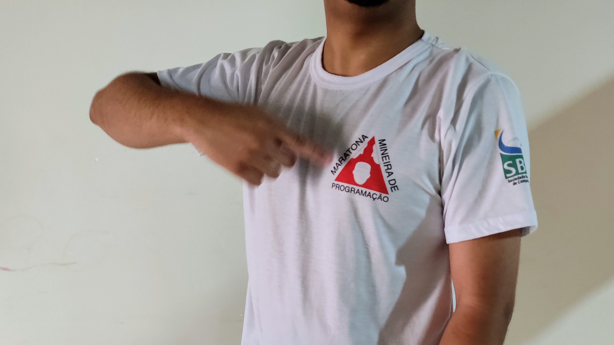
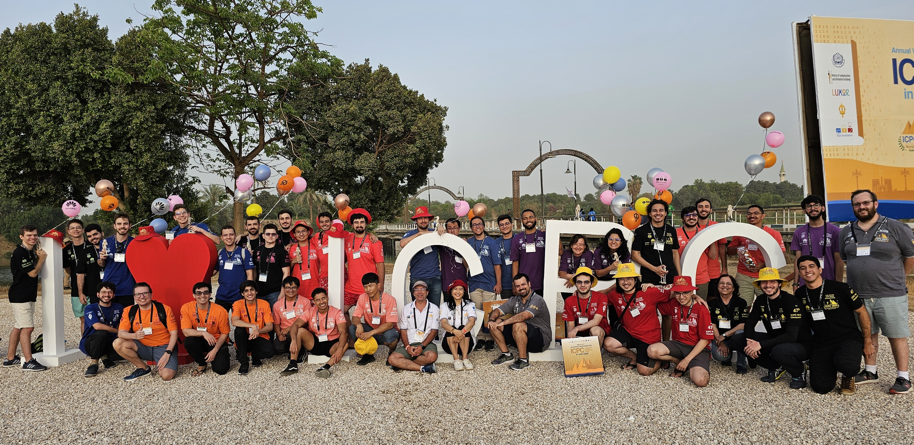
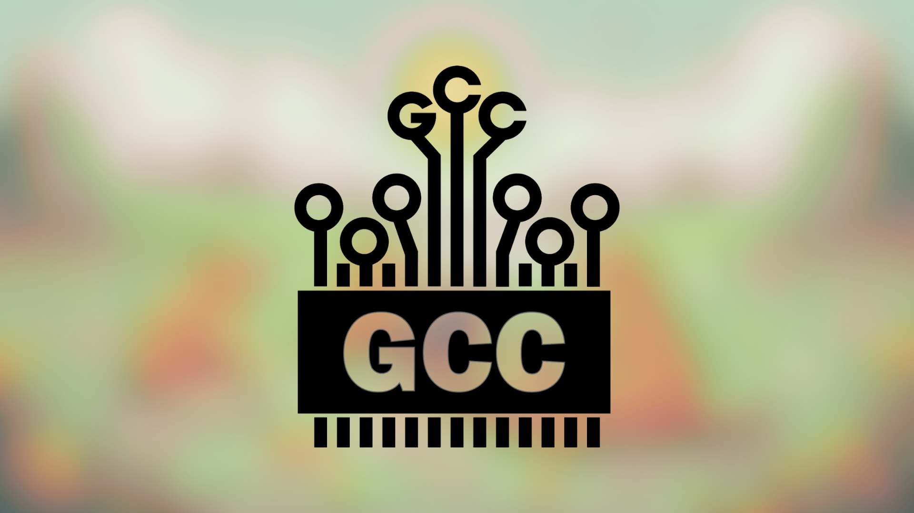
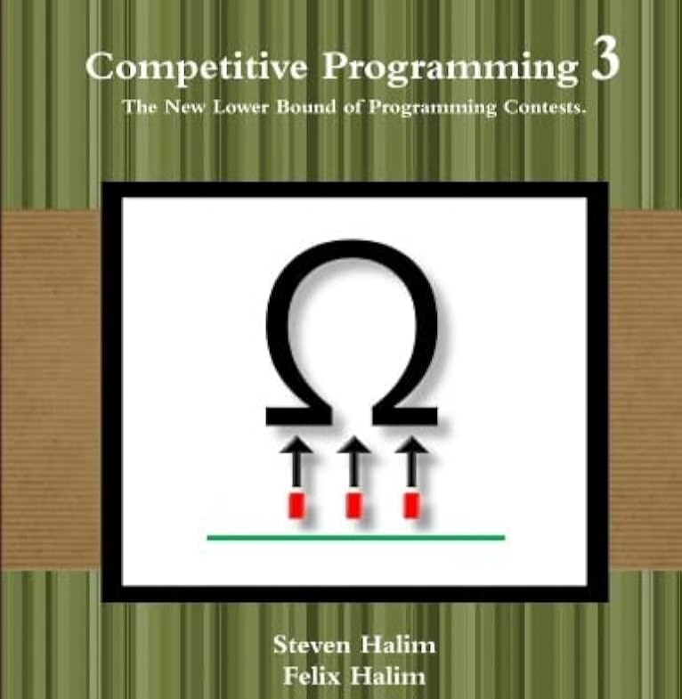
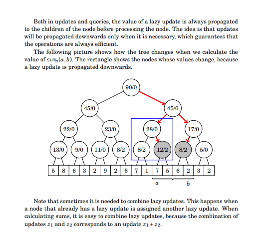
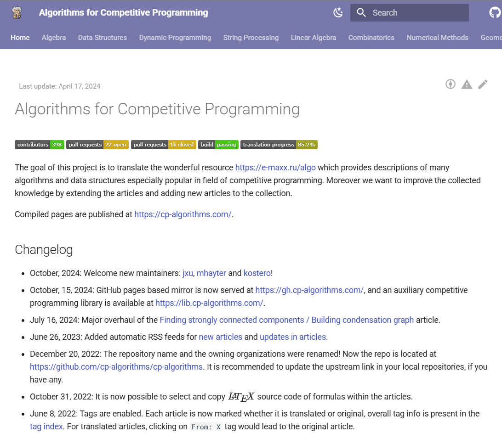
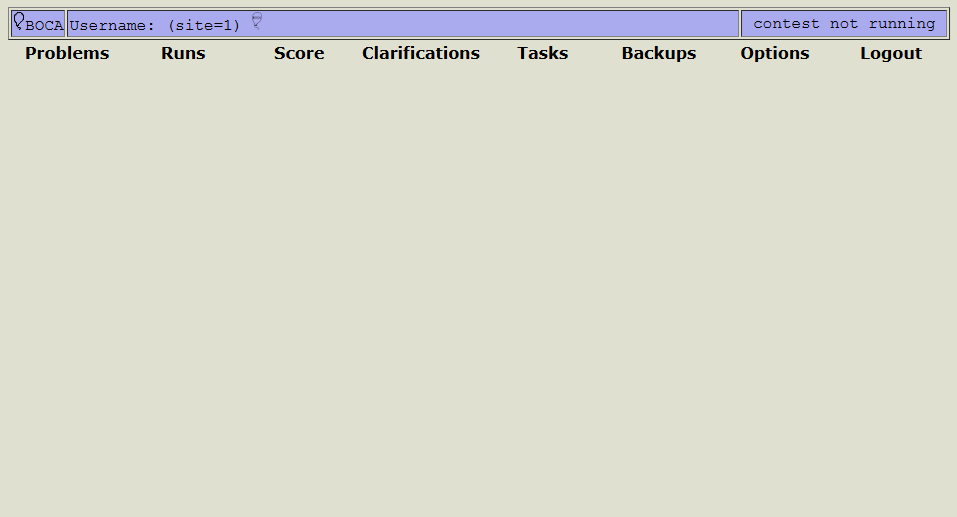

Esta seção apresenta um guia para começar na Programação Competitiva, incluindo dicas de preparação, materiais de estudo e uma explicação sobre o funcionamento das competições.
A Programação Competitiva consiste na prática de resolver
problemas por meio da programação em um cenário competitivo
como Maratonas de Programação. Nessas competições, o objetivo
é solucionar o maior número possível de problemas no menor
tempo, desenvolvendo soluções eficientes e práticas.
Os desafios propostos demandam habilidades de pensamento
computacional e envolvem tópicos de ciência da computação, matemática e lógica.
As competições podem ser realizadas de forma individual ou em
grupo, geralmente compostas por três pessoas, onde apenas um
computador está disponível.
Se tornar um programador diferenciado ao mesmo tempo que caça balões e conquista camisas legais…

Quero participar! Em qual competição consigo me inscrever?
Para estudantes do ensino fundamental, médio, superior, há várias competições disponíveis.
Entre as principais estão a OBI e a Maratona de Programação (da SBC, ICPC).

A Olimpíada Brasileira de Informática (OBI) é uma competição de programação realizada anualmente desde 1999, organizada pela Sociedade Brasileira de Computação (SBC) para estudantes do ensino básico (fundamental e médio) e do primeiro ano de graduação.
Para saber mais sobre clique aqui.
A SBC organiza essa competição desde 1996, sendo a principal voltada para estudantes de graduação no Brasil. A competição é dividida em duas etapas: regional e nacional. Cada universidade é representada por uma equipe formada por três estudantes (nas regionais, uma universidade pode ter mais de uma equipe). As equipes classificadas avançam para a final latino-americana e, posteriormente, para a final mundial, organizada pela ICPC (International Collegiate Programming Contest) em parceria com a ACM (Association for Computing Machinery).
Para saber mais sobre clique aqui.
Para nós do IFTM Campus Uberaba Parque Tecnológico, participamos também de outras duas competições.
Organizada pela UFU em parceria com a Algar, é uma competição regional que acontece geralmente em dois locais: no Campus Santa Mônica e no Campus Monte Carmelo da UFU. O formato da prova é semelhante ao da Maratona de Programação da SBC.
A Maratona Mineira de Programação é um evento realizado desde 2012, voltado para estudantes de graduação e início de pós-graduação de universidades de Minas Gerais. As regras e o formato seguem o mesmo padrão da Maratona de Programação da SBC.
Para saber mais sobre clique aqui.
Para iniciar na Programação Competitiva é necessário ter domínio básico de uma linguagem de programação, tendo familiaridade com estruturas sequenciais, condicionais e de repetição. No entanto, se você ainda não possui experiência em programação, não se preocupe! Este guia também foi pensado para ajudá-lo a aprender desde o início.
Cada competição estabelece uma lista específica de linguagens permitidas. Na Maratona de Programação da SBC, por exemplo, as linguagens aceitas são C, C++, Java, Python e Kotlin. Atualmente, C++ e Python são as principais linguagens utilizadas pela comunidade, reconhecidas pelas suas vastas bibliotecas padrão.
No IFTM, a preferência é pelo uso de C++, já que a comunidade de competidores adota essa linguagem há mais tempo. Como resultado, há uma maior disponibilidade de materiais de estudo na internet, incluindo soluções de exercícios e implementação de algoritmos.
Existem diversos tópicos que podem ser explorados. Para tornar os conteúdos mais acessíveis, organizamos de acordo com o nível de experiência.
É esperado que você tenha domínio das estruturas de controle da linguagem e que utilize a biblioteca padrão para simplificar a solução do problema. Segue o material recomendado.
Curso introdutório em programação esportiva mfp Playlist.
Também recomendamos a plataforma Neps Academy que oferece gratuitamente o curso de introdução à programação.
Clique aqui para ser redirecionado à plataforma.
Nesta etapa aprofundamos em algoritmos e estrutura de dados, conceitos que vão auxiliar para criar uma solução eficiente. Segue o material recomendado.
Curso da UFMG sobre tópicos de programação competitiva, Playlist.

Canal do grupo GCC com diversas aulas de diferentes temas, Link do Canal.
Nesta fase, abordamos tópicos que não são exclusivamente de programação, mas sim de computação de forma ampla, como Teoria dos Números, Manipulação de Bits, Geometria Computacional, Teoria dos Jogos, Algoritmos Avançados em Grafos, entre outros.
Recomendamos os livros Competitive Programming 3, Competitive Programmer’s Handbook e o site Algorithms for Competitive Programming

Este é um livro consagrado e muito valorizado na comunidade de programação competitiva.

Manual de Programação Competitiva de Antti Laaksonen.

Site com explicações e implementações de diversos algoritmos.
Para praticarmos, utilizamos os Juízes Online, que são sistemas que reúnem problemas de diferentes temas e níveis de dificuldade. Existem diversos juízes, e, em geral, o funcionamento deles é bem similar: você desenvolve uma solução para o problema proposto e a submete ao juiz. O sistema então retorna informando se a sua solução foi aceita ou não.
Os principais juízes são:
Popular entre os iniciantes, o BeeCrowd é um juiz brasileiro que contém todos os problemas da OBI e da Maratona de Programação SBC. Além disso, oferece uma grande variedade de exercícios, que vão do nível básico ao avançado.
O SPOJ (Sphere Online Judge) é um juiz de origem polonesa e um dos mais antigos e renomados no mundo da programação competitiva. Criado em 2004, o SPOJ possui uma coleção extremamente rica de problemas, abrangendo desafios de diversas competições importantes, como o ACM-ICPC, além de problemas criados pela própria comunidade.
É um juiz de origem russa amplamente reconhecido como uma das principais plataformas da comunidade de programação competitiva. Ele se destaca por seus contests online, que são competições regulares semelhantes às maratonas de programação. A comunidade é muito engajada e provavelmente você encontrará os principais competidores lá.
Durante as maratonas de programação, você provavelmente utilizará o BOCA (BOCA Online Contest Administrator) para submeter suas soluções. Esse sistema é amplamente adotado em competições na América Latina.
O BOCA é um sistema para gerenciar competições de programação, nele temos três tipos de usuários:
O sistema automatiza boa parte das tarefas, facilitando o gerenciamento de uma competição.

Problems: Nesta aba, você encontrará os problemas da prova, incluindo o enunciado
completo,
os detalhes sobre a entrada e saída de dados e o arquivo correspondente à questão.
Runs: Nesta seção, você submete as soluções para os problemas propostos. Ao fazer isso,
você
vai escolher o problema e a linguagem que você implementou a solução.
Score: O ranking da competição.
Clarifications: Para se comunicar com os organizadores sobre a prova, caso tenha algum
problema ou dúvida, utilize esta aba.
Tasks: Caso queira imprimir algum código, utilize esta aba.
Backups: Se quiser ter controle das soluções, você pode deixar registrado versões
anteriores
do seu código. Para enviar, apagar e baixar suas soluções, utilize esta aba.
Options: Nesta aba, você pode modificar informações do seu time, caso deseje fazer
alterações.
Para saber mais sobre clique aqui.
printf(“Seu foco determina sua realidade.”);